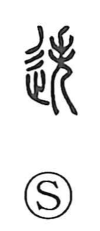

迭

Uncategorized
Kun: | On: tetsu
to alternate ・ in turn ・ mutually ・ successively
Explanation
A phono-semantic character built on 失 as its sound element. Shirakawa sees 失 as the figure of a shamanic attendant, hands and feet lifted in dance, absorbed in an ecstatic state that forgets the self. In 迭, that dancer’s vigorous, up-and-down movement gives rise to the idea of things happening by turns and in reciprocity—hence meanings like “alternately,” “in turn,” and “mutually.” The same phonetic 失 appears in sibling characters such as 跌 (“to stumble”), marking the shared sound while the movement component in 迭 focuses the sense on repeated, alternating motion.